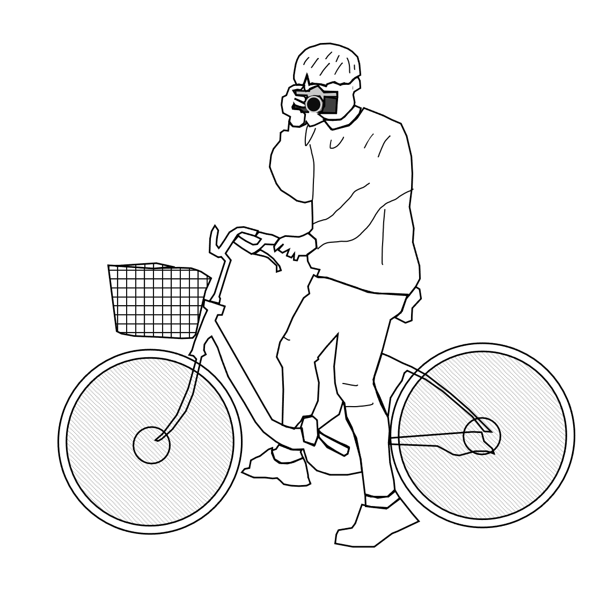
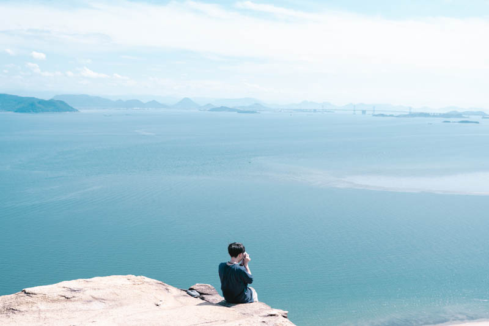
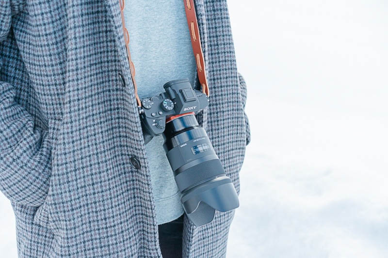
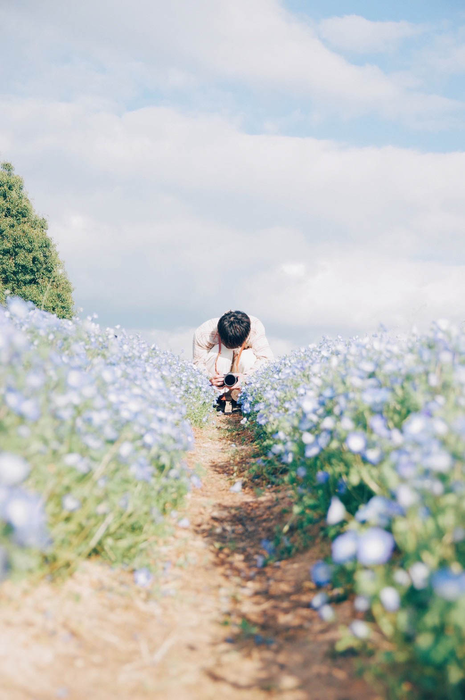

1999年11月29日 山口県岩国市出身。幼い頃から一眼レフに憧れを抱いていた。高校卒業後、自動車メーカーに就職し、初任給でCanon EOS kiss X9iを購入。当時はただ撮ることを純粋に楽しんでいたがマニュアルモードでの撮影方法を理解していなかった。カメラをきっかけに同期の友達と仲良くなり、ISO・絞り・SS などマニュアル撮影について勉強させてもらった。
そこから更に興味を持ち、APS-C機からフルサイズ機へ変更。購入したカメラはSONY α7Ⅲ。画質の良さに驚きを隠せなかった。人物撮影から風景写真へと移り変わっていき、FE70-200mmF2.8 GM OSSを購入して幅広いジャンルの撮影が可能になった。1.2ヶ月後には転職して上京する予定のため、今の段階からワクワクしている。

カメラについて色々教えてくれた親友のInstagram.